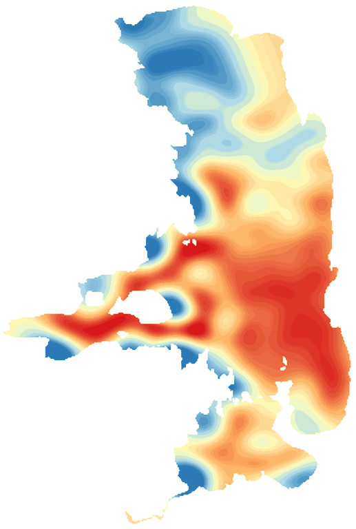

LakeScope › MT
Flathead Lake today
Updated 2026-11-21 - Atlas Labs
41°F water, level steady, near normal, calm this morning.
Water level
2890.63 ft
USGS gauge 12371550 - 2026-11-21
7-day trend: steady (-0.08 ft). Compared with normal for this date: -0.3 ft (same weeks, 2016-2025).
Water clarity and algae
No fresh view yet Clouds have hidden the lake lately.
Surface temperature
41°F
seen from space on 2026-11-15

Ice
Open - 0% ice cover
Estimate from weather and satellite, not a measurement. Check the ice yourself before going on it.
Weather, next 3 days
| Day | Sky | High / low | Wind | Rain |
|---|---|---|---|---|
| Saturday | Partly Sunny | 35 / 25°F | 6 mph NNE | 13% |
| Sunday | Cloudy then Slight Chance Light Snow | 33 / 28°F | 9 mph N | 18% |
| Monday | Areas Of Fog | 34 / 27°F | 5 mph NE | 0% |
Sunrise 07:51 - sunset 16:52 - Waxing gibbous. National Weather Service.
Get the LakeScope app: alerts and the 3-D view of Flathead Lake